UNIDADE 6 - Ângulos
180
UNIDADE 6 - CAPÍTULO 1
A Lei n.° 10.098, de 19 de dezembro de 2000, é conhecida como a Lei da Acessibilidade. Ela estabelece normas que visam facilitar o acesso de portadores de necessidades especiais a diferentes lugares. Para isso, seria necessário a supressão de barreiras em vias e espaços públicos, mobiliários urbanos, edifícios, meios de transporte, etc. Para cumpri-la, em muitos edifícios públicos e privados, é comum haver rampas de acesso, já que a escada é considerada um obstáculo para o cadeirante.
Na ilustração, a rampa de acesso à loja foi construída de maneira correta e substitui os quatro degraus da escada. As inclinações das rampas de acesso podem variar entre 5 e 8,33%.
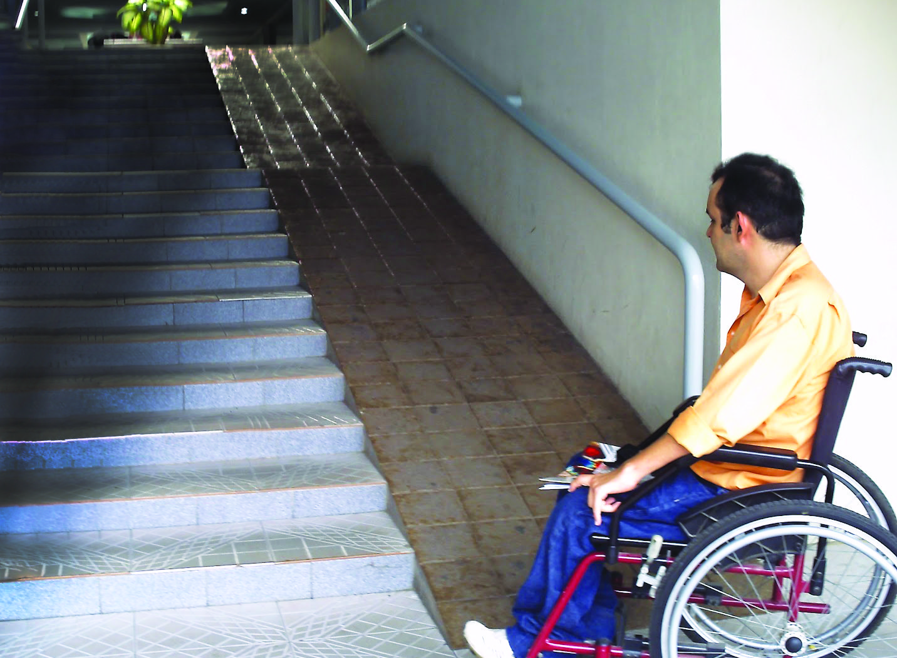Mas, infelizmente, nem sempre as rampas de acesso respeitam as normas previstas. A norma que rege as condições de acessibilidade é a NBR 9050, de 2004. Na imagem ao lado do texto, está representada uma rampa construída fora dos padrões recomendados.
CONVERSE
1. Na cidade em que você mora é comum encontrar rampas de acesso para cadeirantes? Em quais estabelecimentos você já viu?
2. Observando as duas situações, como você identifica que a rampa de acesso foi construída fora dos padrões?
3. Em sua opinião, ao se construir uma rampa de acesso para um cadeirante, qual é o cuidado que se deve ter?
4. De acordo com o texto, qual é a variação das inclinações considerada dentro dos padrões recomendados?
181
UNIDADE 6 - CAPÍTULO 1
CAPÍTULO 1 - Medidas e construção de ângulos
Usando o transferidor para medir e construir ângulos
As catracas representadas nas imagens, quando giram, fazem rotações em torno de um ponto e realizam o giro com um determinado ângulo.
Podemos indicar as rotações ou os giros em torno de um ponto por meio da medida de seus ângulos. A unidade de medida-padrão para medir um ângulo é o grau. Um ângulo de 1 grau corresponde a \(\frac{1}{360}\) de uma circunferência. Para medir o grau, usamos um instrumento chamado transferidor.

1. Troque ideias com seu colega e indiquem de quantos graus é o giro realizado em cada catraca toda vez que uma pessoa passa por ela.
182
UNIDADE 6 - CAPÍTULO 1
Para medir um ângulo utilizando o transferidor, devemos posicionar o centro deste sobre o vértice do ângulo e verificar se um dos lados do ângulo está coincidindo com a marca zero do transferidor. A marca do transferidor sobre o outro lado indica a medida do ângulo.
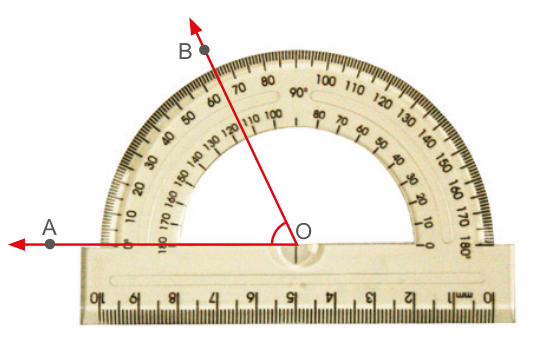Acima temos representado um ângulo de 65°. Indicaremos por med (AÔB) = 65°.
O transferidor também pode ser utilizado para construir ângulos. A seguir, acompanhe a construção do ângulo AÔB, com 60°.
► Com o auxílio de uma régua, trace uma semirreta \(\overrightarrow{OA}\).
► Como o ponto O é o vértice, posicione o centro do transferidor sobre ele, coincidindo com a marca do 0°. Em seguida, marque com lápis um ponto no local em que o transferidor indica 60°.
183
UNIDADE 6 - CAPÍTULO 1
► Retire o transferidor e, com o auxílio da régua, trace uma semirreta partindo do ponto O e passando pela marcação de 60°. Marque o pon- to B, dando origem à \(\overrightarrow{OB}\), de tal forma que a med (AÔB) = 60°.
ENCONTRE SOLUÇÕES
1. Utilizando um transferidor, meça os ângulos indicados e anote em seu caderno.
a)
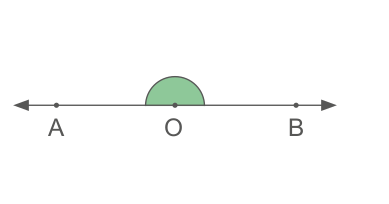b)
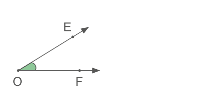c)
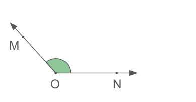d)
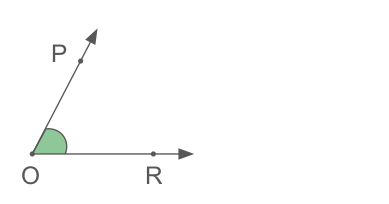184
UNIDADE 6 - CAPÍTULO 1
2. Utilizando um transferidor, desenhe em seu caderno os ângulos indicados.
a) 45°
b) 60°
c) 150°
3. Quanto mede o menor ângulo formado pelos ponteiros de um relógio que marca exatamente 1 hora?
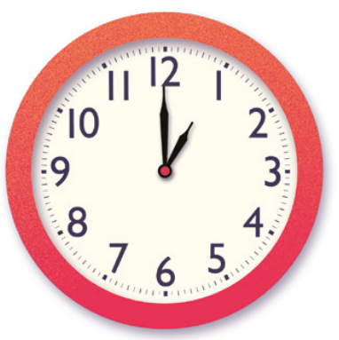4. Escreva, em seu caderno, quanto mede o maior ângulo formado pelos ponteiros de um relógio que está marcando:
a)
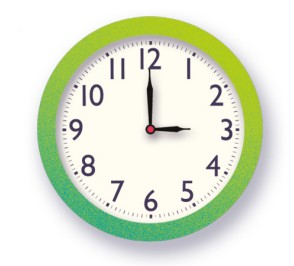b)
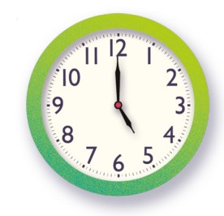c)
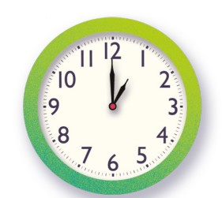d)
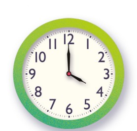5. Observe os ângulos formados a seguir e classifique-os.
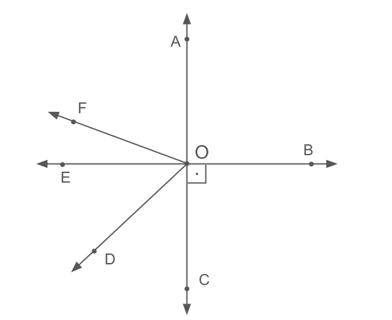a) AÔB
b) BÔD
c) EÔB
d) EÔF
e) CÔD
f) CÔE
Grau, minuto e segundo
O grau apresenta dois submúltiplos: o minuto e o segundo. O grau é dividido em 60 partes iguais. Cada parte é denominada minuto.
1° = 60’
O minuto também é dividido em 60 partes iguais. Cada parte é chamada de segundo.
1’ = 60”
185
UNIDADE 6 - CAPÍTULO 1
Transformação de unidades
A seguir, veremos algumas situações nas quais devemos realizar transformações entre graus, minutos e segundos.
Situação 1
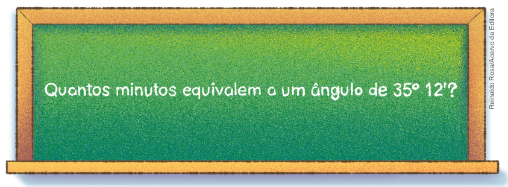Sabemos que 1° corresponde a 60’, portanto vamos transformar 35° em minutos. Para isso, efetuaremos a seguinte multiplicação:
35° = 35 ∙ 1° = 35 ∙ 60’ = 2 100’
Logo, 35° 12’ equivalem a 2 100’ + 12’ = 2 112’.
Situação 2
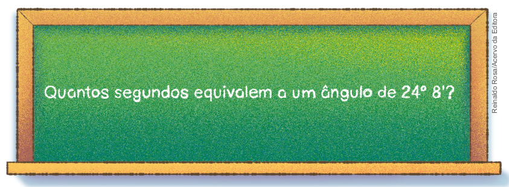Como já sabemos que 1° corresponde a 60’, primeiramente, vamos transformar os graus em minutos. Para isso, efetuaremos a seguinte multiplicação:
24° = 24 ∙ 1° = 24 ∙ 60’ = 1 440’
Em seguida, efetuaremos a adição dos minutos:
1 440’ + 8’ = 1 448’
Como 1’ corresponde a 60”, vamos transformar os minutos em segundos:
1 448’ = 1 448 ∙ 1’ = 1 448 ∙ 60” = 86 880”
Portanto, 24° 8’ correspondem a 86 880”.
186
UNIDADE 6 - CAPÍTULO 1
Situação 3
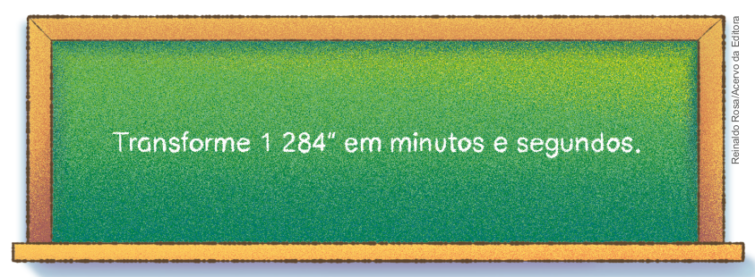Como 1’ corresponde a 60”, temos:
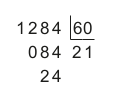Em 1 284” há 21' e sobram 24”. Logo, 1 284” correspondem a 21’ 24”.
ENCONTRE SOLUÇÕES
1. Responda em seu caderno:
a) Quantos minutos correspondem a 1 grau?
b) Quantos segundos correspondem a 1 minuto?
c) Quantos segundos correspondem a 1 grau?
2. Em seu caderno, transforme em graus e minutos.
a) 96’
b) 248’
c) 452’
3. Agora, transforme em segundos.
a) 2° 10’
b) 21’ 30”
c) 16°
4. Com um transferidor, meça os ângulos a seguir, indicando em seu caderno as medidas em graus. Em seguida, expresse essas medidas em minutos e segundos.
a)
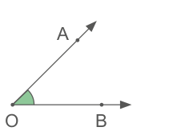b)
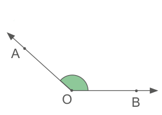c)
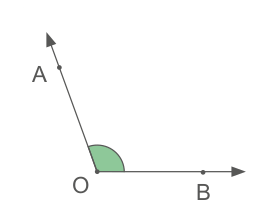d)
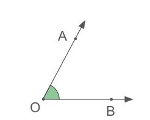187
UNIDADE 6 - CAPÍTULO 1